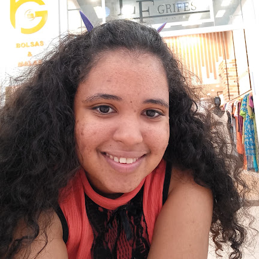

Jamily Grazielle
Desenvolvedora Front-end no Programa Trilhas
Sou programadora, principalmente front-end, e tenho um amor enorme por design: gosto de transformar ideias em interfaces bonitas, intuitivas e acessíveis.
Fora do código, sou especialista em impressão 3D e faço parte da equipe de robótica Team Two. Como hobby, amo animes, mangás e novels, e a leitura é uma das minhas paixões. Nas horas livres, você me encontra no Brawlhalla jogando de Queen Nai.
- Front-end
- Design
- Impressão 3D
- Robótica
- Animes
- Novels
- Leitura
- Brawlhalla